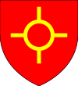

| Name | Prt. | CoA | Birth | Marriage(s) | Death | Claim |
Bartholomew
1000–1016
(16) |  |  | 0964-01-10 | Clarica
998–1003
No children
Lina Taunton
1003–1016
4 children | 1016-01-12
Aged 52 | |
Christopher I
1016–1024
(8) |  |  | 0969-01-08 | | 1024-10-28
Aged 55 | |
Christopher II
1024–1061
(37) |  | | 1004-09-27 | Joan Littlehampton
1024–1033
2 children
Clarica Albany
1037–1061
10 children | 1061-07-16
Aged 57 | |
Rocelin
1061–1098
(37) | | | 1042-05-05 | Ragenild Loughborough
1061–1098
No children | 1098-10-22
Aged 56 | |
Christopher III
1098–1136
(38) | | | 1081-06-14 | Ida Nantwich
1109–1136
3 children | 1136-11-21
Aged 55 | - Grandson of Christopher II, through his son, Christopher, 3rd Prince
- Nephew of Rocelin
|
Christopher IV
1136–1167
(31) | | | 1114-11-13 | Clarica Albany
1133–1167
16 children | 1167-02-18
Aged 53 | |
Christopher V
1167–1203
(36) | | | 1143-11-23 | Clarica Hartlepool
1163–1202
13 children | 1203-10-12
Aged 60 | |
Christopher VI
1203–1235
(32) |  | | 1167-10-07 | Lettice Kinnoull
1188–1225
3 children | 1235-07-30
Aged 68 | |
Christopher VII
1235–1253
(18) | | | 1204-06-01 | Ailova Stroud
1233–1253
8 children | 1253-06-17
Aged 49 | |
Norman
1253–PRSN
(47) |  | | 1249-05-20 | Scholastica Rutland
1266
No children | PRSN
Aged 50 | |